Primeiros Passos com o Pacote Json2dash
O que é o pacote json2dash?
O pacote desenvolvido pelo Projeto Plataforma Multi-Mapa PB busca eliminar parcialmente a necessidade de utilizar programação para a confecção de aplicações web, uma vez que o usuário enviará informações por meio de um arquivo de texto no formato JSON (JavaScript Object Notation). As informações fornecidas como entrada são convertidas de forma automática em uma aplicação Dash que pode ser publicada na Internet.
Ele é constituído por um conjunto de módulos, os quais englobam algumas bibliotecas existentes dentro da linguagem Python visando simplificar processos de programação e, principalmente, remover a necessidade de reescrever comandos comumente utilizados.
As principais dependências do pacote json2dash são listadas a seguir: Pandas, Folium e Dash.
Informações Específicas do Pacote Json2dash
| Descrição | Autor | Versão |
|---|---|---|
| Criação de dashboards a partir de um arquivo de texto no formato JSON para visualização de dados georeferenciados | CearDados | 0.0.1 |
Dependências do pacote json2dash
| Bibliotecas | bokeh | branca | dash | folium | pandas | Shapely |
|---|---|---|---|---|---|---|
| Versão | 2.2.3 | 0.4.1 | 1.16.2 | 0.11.0 | 1.1.3 | 1.7.0 |
O que precisamos fazer para utilizar o pacote json2dash?
Esses passos já possuem uma documentação disponivel no GitHub Docs.
-
Criar um repositório privado:
Para criar um repositório, será utilizada a própria plataforma do GitHub. Também é possível criar um novo repositório utilizando a interface gráfica para Git, o GitKraken, seguindo o procedimento disponivel aqui.
-
Criar um token para acesso pessoal:
Para criar o seu token, será utilizada a própria plataforma do GitHub. Os tokens de acesso pessoal (PATs) são uma alternativa para o uso de senhas para autenticação no GitHub ao usar a API do GitHub ou a linha de comando. Para utilizar o pacote json2dash como dependência, é indispensáveis que seja feito um fork do repositório para o seu perfil e que utilize o token pessoal.
-
Estudar o código fonte:
No repositório do projeto Plataforma Multi-Mapa PB, todas as informações sobre o pacote e alguns exemplos utilizando os componentes de gráfico, mapas, imagens, litas suspensas e markdown estão disponíveis.
Adicionando o pacote json2dash ao seu ambiente virtual conda
Ative o seu ambiente conda
Para isso, com o seu terminar aberto, execute a seguinte linha:
conda activate [nomeDoSeuAmbiente]
Logo após, você pode instalar o pacote de duas formas:
Utilizando o instalador de pacotes pip diretamente.
pip install git+https://SEUTOKEN@github.com/CEARDados/mm.git
Utilizando o instalador de pacotes pip para instalar as dependências armazendas em um arquivo de texto.
pip install -r requirements.txt
Para verificar se o ambiente foi criado corretamente, execute no seu terminal
conda info --envs
Algumas outras dependências necessitam serem instaladas durante o processo de deploy da aplicação na plataforma de hospedagem Heroku e para isso, crie um arquivo requirements.txt com o conteúdo abaixo dentro de seu repositório.
astroid==2.4.1
attrs==19.3.0
bokeh==2.2.3
branca==0.4.1
Brotli==1.0.7
certifi==2020.6.20
chardet==3.0.4
click==7.1.2
click-plugins==1.1.1
cligj==0.5.0
colorama==0.4.3
dash==1.16.2
dash-core-components==1.12.1
dash-html-components==1.1.1
dash-renderer==1.8.2
dash-table==4.10.1
Fiona==1.8.13
Flask==1.1.2
Flask-Compress==1.5.0
folium==0.11.0
future==0.18.2
geopandas
gunicorn==20.0.4
idna==2.10
isort==4.3.21
itsdangerous==1.1.0
Jinja2==2.11.2
lazy-object-proxy==1.4.3
MarkupSafe==1.1.1
mccabe==0.6.1
munch==2.5.0
numpy
packaging==20.7
pandas==1.1.3
Pillow==8.0.1
plotly==4.14.3
pyarrow==2.0.0
pylint==2.5.2
pyparsing==2.4.7
python-dateutil==2.8.1
pytz==2020.1
PyYAML==5.3.1
requests==2.24.0
retrying==1.3.3
scipy==1.6.1
Shapely==1.7.0
six
toml==0.10.0
tornado==6.1
typed-ast==1.4.1
typing-extensions==3.7.4.3
urllib3==1.25.9
Werkzeug==1.0.1
wincertstore==0.2
wrapt==1.12.1
xlrd==1.2.0
Obs.: Caso ocorra algum erro no processo de instalação do pacote geopandas, acesse o site com o procedimento de instalação do pacote e todas suas dependências no ambiente virtual conda.
Projeto Básico com o Pacote Json2dash
Para desenvolver esse primeiro dashboard sem a utilização de callbacks, será utilizado o Visual Code Studio como editor de texto. Além disso, somente os principais arquivos para o desenvolvimento de um dashboard vão ser apresentados, os que não tiverem suas alterações apresentadas podem facilmente ser encontrado no repositório do projeto.
Arquivos necessários para o projeto:
configuration.jsonapp.pyindex.py-
./apps/exemplo.json
-
./data/df_EstadualFinal.csv
-
./images/logo_ufpb.pnglogo_cear.png
-
./assets/default.cssstyle.css
Acesse o repositório onde o projeto completo está armazenado clicando aqui.
Alterando o arquivo configuration.json
Dentro de seu repositório, crie um arquivo de texto no formato JSON (JavaScript Object Notation) chamado de configuration.json. Após criar o arquivo, é necessário inserir as informações básicas disponíveis abaixo para a construção da aplicação.
Obs.: As informações acima são indispensáveis para que o pacote json2dash tenha conhecimento do nome da aplicação, qual a página principal que será renderizada no seu navegador.
Alterando o arquivo app.py
Crie um arquivo Python chamado de app.py. Esse arquivo será responsável por criar um objeto Dash e que também carregará as informações escritas pelo usurário no arquivo configuration.json na estrutura de um dicionário.
Obs.: Nas duas primeiras linhas, é importada as bibliotecas necessárias para o bom funcionamento do código de app.py. As linhas 11-14 está criando o objeto dash a partir da função Dash do pacote dash. Na linha 16 altera o título da página que aparecerá no navegador para o título enviado pelo usuário em configuration.json.
Alterando o arquivo index.py
Crie um arquivo Python chamado de index.py. Esse arquivo será responsável por criar o layout, realizar as alterações dinâmicas de layout e por onde é possível rodar a aplicação.
Obs.: Para mais informações sobre a função callback acesse Basic Dash Callbacks.
Alterando o arquivo apps/exemplo.json
Para melhor organizar o projeto, crie uma pasta chamada apps onde será armazenado os arquivos .json e .py enviados pelo usuário contendo o layout e as funções de retorno, respectivamente. Para esse exemplo, será utilizado apenas um arquivo JSON e assim, um dashboard estático sem atualização dinâmica de layout vai ser desenvolvido.
Como arquivo aberto, vamos importar o esquema que irá auxiliar na escrita do arquivo de texto uma vez que toda a estrutura aparecerá para o utilizador de forma inteligente.
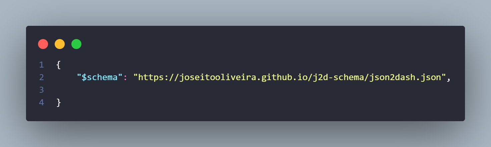Após adicionar o esquema para formatar o arquivo, é preciso adicionar a chave layout para que seja possível construir a aplicação por meio de linhas e colunas.
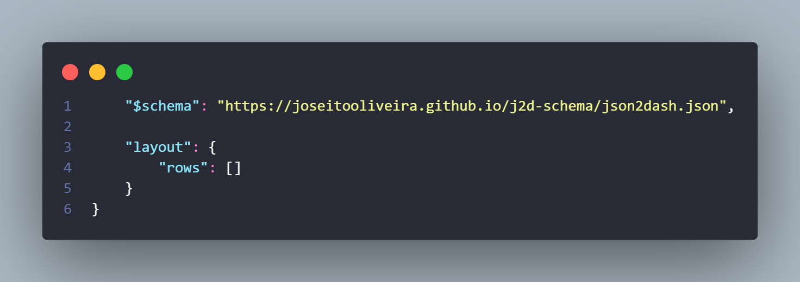O layout da aplicação é dividido em linhas e colunas, então dentro da primeira linha, que pode possuir até 12 colunas (twelve columns), serão adicionadas apenas 3 colunas. Além disso, a largura de cada coluna é controlada pelo parâmetro className, o qual é utilizado para informar quantas colunas da grade estão disponíveis para aquele componente.
Ex.: six columns é igual 48% da largura do layout e compreende 6 colunas das 12 disponíveis para aquela linha (row).
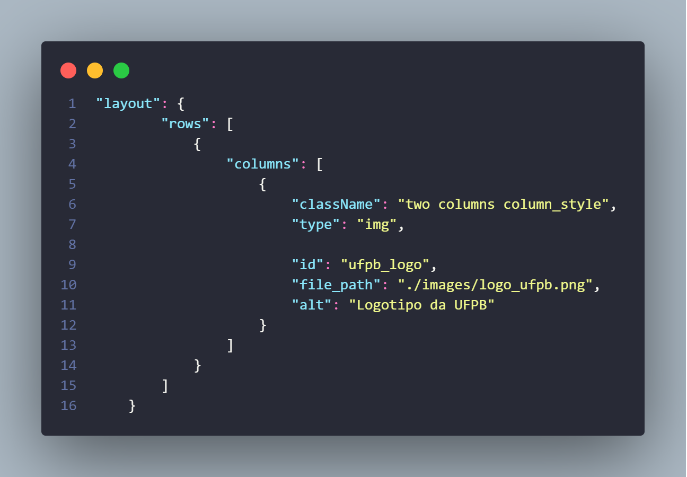Como é disponível apenas 12 colunas dentro da grade em cada linha do layout, então é aconselhavel ajustar os componentes para que eles preencham as 12. Por exemplo, na primeira linha, a primeira coluna com um componente img utilizava 2 colunas no parâmetro className e, assim, foram adicionadas mais dois componentes, um utilizando 8 colunas e outro com 2, totalizando 12 colunas da grade disponível para aquela linha.
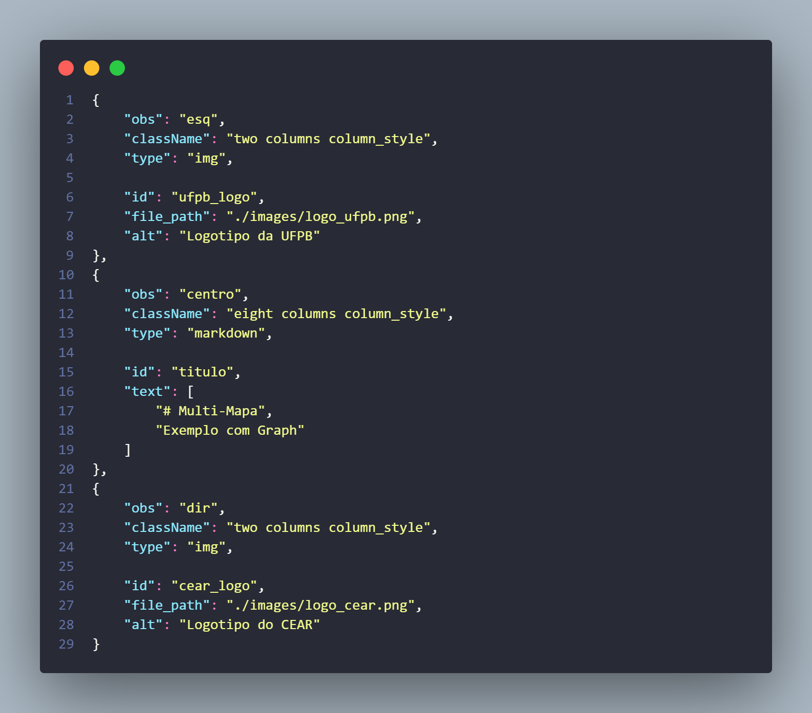Obs.: Para saber o que cada coluna representa, foi adicionada uma chave obs para indicar a sua posição no layout. Ela não altera nada na construção da aplicação, mas serve para guiar o usuário e qualquer outra pessoa que necessite estudar o código.
Agora, será criada mais uma linha contendo apenas uma coluna onde será inserido um gráfico com o componente graph_v02 apresentando algumas das informações contidas no arquivo df_EstadualFinal.csv que está na pasta data (pasta criada para organização do projeto).
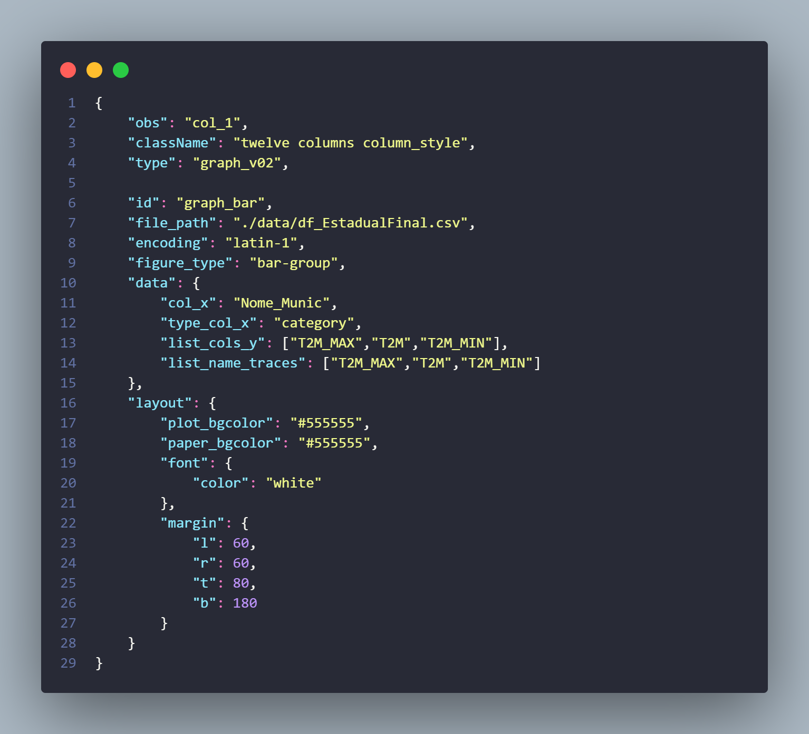Obs.: Os parâmetros abaixo enviado pelo usuário é
id: é do tipo string, obrigatório, e é utilizado como identificador único do componente.file_path: é do tipo string, obrigatório, e representa o caminho do arquivo (CSV, feather, JSON ...).encoding: é do tipo string, opcional com utf-8 como padrão, representa o Encoding utilizado para ler 'file_path'.figure_type: é do tipo string, obrigatório, o padrão é 'scatter-lines', repreenta o tipo do gráfico escolhido pelo usuário no formato tipo-modo.data: é do tipo dict, obrigatório, no formato apresentado acima.layout: é do tipo(dict), opcional - padrão({ }), (Dicionário conforma definido pelo Plotly.)
Agora, será criada uma nova linha no layout onde uma mapa base será inserido utilizando o componenenet map e a localização inicial -7.129694 para latitude e -37.00 para longitude.
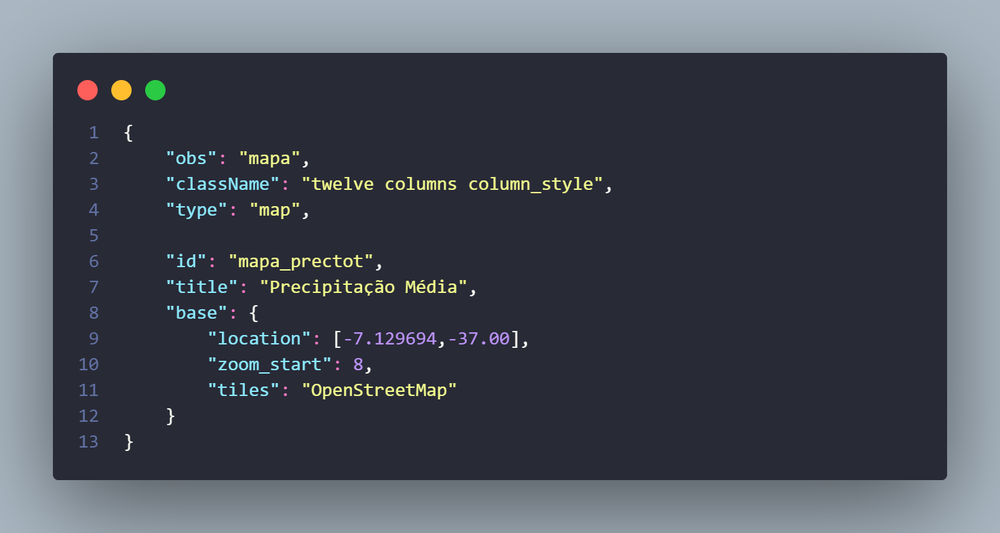Obs.: O mapa esta utilizando uma única coluna com todas as colunas da grade.
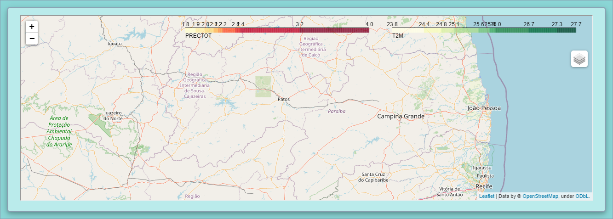Após isso, será inserida duas camadas de informações sobre o mapa, e para isso, deve-se utilizar a chave layers contendo a seguinte informação:
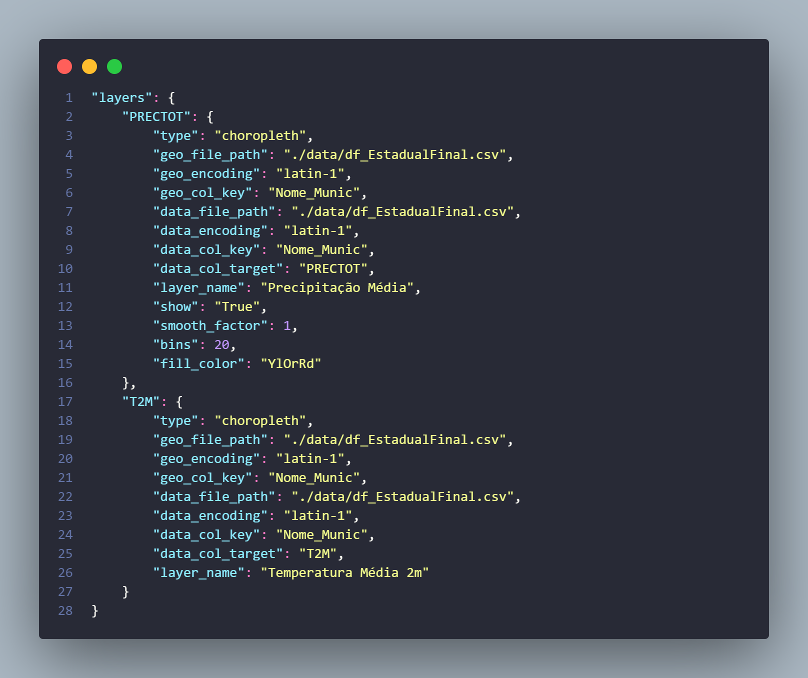 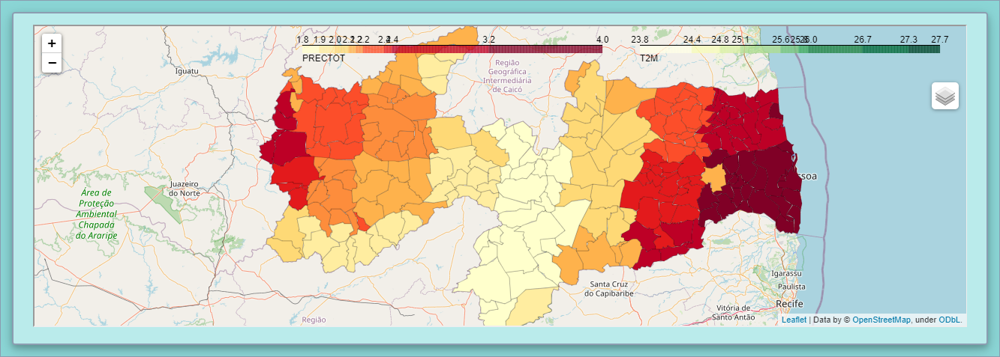terceira linha - Mapa Choropleth da variável Precipitação Média da Paraiba
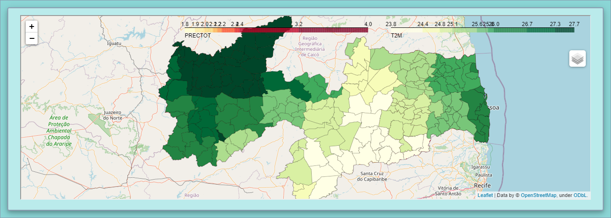terceira linha - Mapa Choropleth da variável Temperatura Média 2m da Paraiba
Por fim, será adicionado um rodapé contendo algumas informações em texto utilizando o componente Markdown do pacote json2dash.
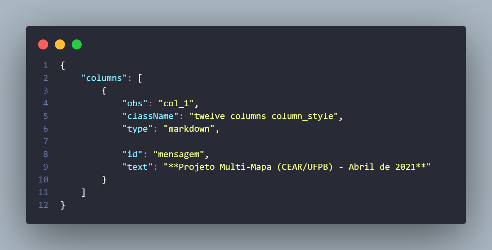Após o projeto está totalmente finalizado, com o seu ambiente virtual conda ainda ativado, é possível rodar em sua máquina fazendo:
python index.py
Acesse a aplicação hospedada no Heroku aqui.
Obs.: Ainda não foi feito!